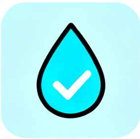
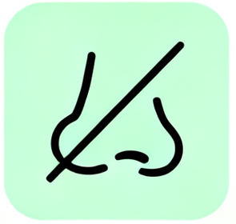
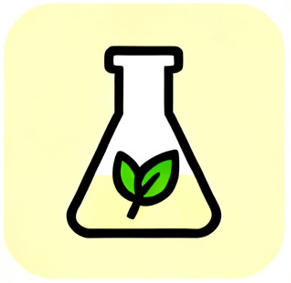

AquaBal - The Solution for fresh and oder-free water storage
- No more foul smells
- No biofilm buildup
- No “tipping” water quality
- Reliable, reusable water at any time
Standing water in tanks becomes stagnant and starts to smell after some time.
The AquaBal prevents the formation of anaerobic microorganisms. Particularly suitable for garden tanks and water retention basins.

Water QualityEffectively prevents stagnant water from “going bad” by maintaining a stable and healthy water condition over time.

Breathe freelyReduces unpleasant odors and inhibits the formation of biofilm, while limiting the growth of anaerobic microorganisms inside the water tank.
Flexible in use
Suitable for use in both concrete and plastic tanks, offering versatile application across different storage systems and different sizes.

Chemical-freeOperates without the use of chemicals and is powered by batteries, ensuring an environmentally friendly and low-maintenance solution.
Keep Your Water Tank Fresh, Odor-Free, and Ready to Use
If you already own a water tank, you probably know the problem: the water sits still for too long, starts to smell, turns cloudy, or develops a slimy layer. What begins as clean stored water can quickly become unusable. This isn’t just bad luck — it’s a natural process!
When water remains stagnant for a longer time the system shifts from an aerobic (healthy) state to an anaerobic one. In this environment, bacteria thrive and produce gases like hydrogen sulfide — the source of that typical “rotten egg” smell. At the same time, biofilm forms on tank surfaces, trapping contaminants and accelerating water quality decline.
Real-World Use Cases
Whether your tank is used occasionally or daily, maintaining water quality is critical:
- Rainwater harvesting systems: Keep stored rainwater fresh and suitable for garden irrigation or household use.
- Garden and agricultural tanks: Prevent microbial growth that can negatively impact plants and irrigation systems.
- Cisterns and underground tanks: Avoid odor buildup in water that is rarely circulated.
- Industrial or commercial storage tanks: Reduce maintenance effort, cleaning frequency, and operational downtime.
- Holiday homes or seasonal properties: Ensure stored water remains usable even after long periods of inactivity.
In all these scenarios, the challenge is the same: stagnant water becomes unstable over time.